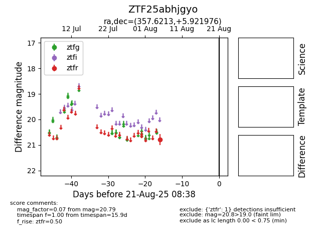

Target ZTF25abhjgyo at 2025-08-21 08:38, see:
FINK: fink-portal.org/ZTF25abhjgyo
Lasair: lasair-ztf.lsst.ac.uk/objects/ZTF25abhjgyo
ALeRCE: alerce.online/object/ZTF25abhjgyo
alt names
ZTF25abhjgyo (ztf,alerce)
coordinates:
equatorial (ra, dec) = (357.6213,+5.92198)
galactic (l, b) = (96.6520,-53.81057)
photometry
last ztfr=20.79
1 ztfr detections
